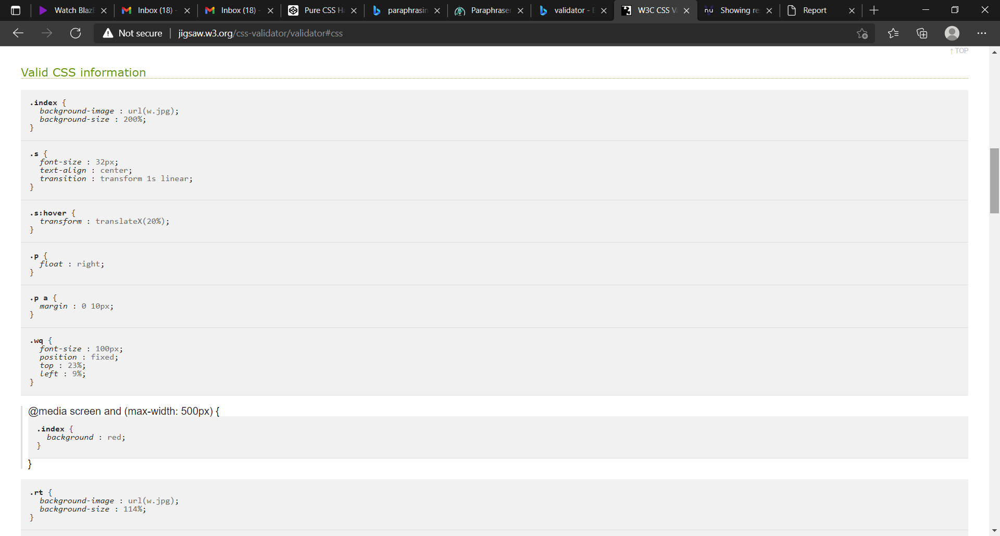
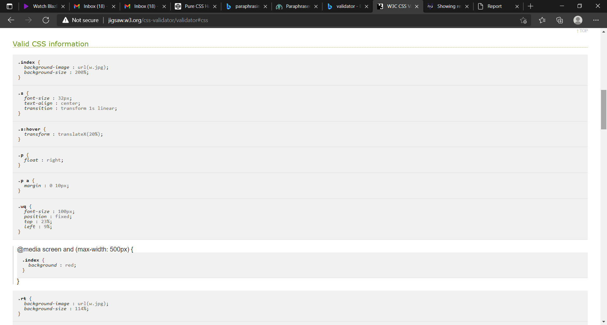

I started my project by applying basic codes.First I simply made sample which was very simple.Then I went to look for various designs and codes.I made my decisions frankly.I used various codes and designs that would help my project.I then made hamburger menu which was very difficult.Most of the codes that I used were new to me so it was hard for me to understand it.During my project I learned many useful codes and designs.I made many erros that caused downfall of my project.But by learning from my mistakes afterawrds there were less errors.I had a diificult time in meeting this project conditions as I was new to this.But as time passed I became used to it.
May 13, I start my project using simle codes and designs.
May 15,I use other designs and codings.
May 18, I make hamburger menu.(https://codepen.io/erikterwan/pen/EVzeRP)
May 22, I completed contact and portfolio html.
May 25 ,I complete my index html.


 
